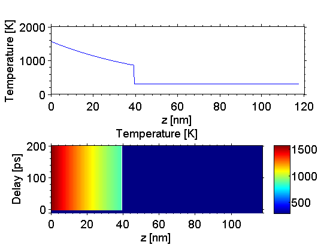
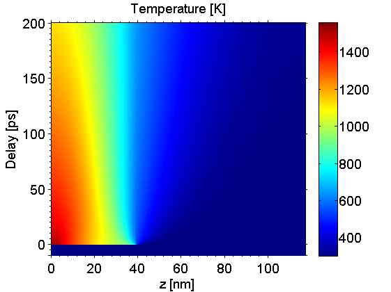
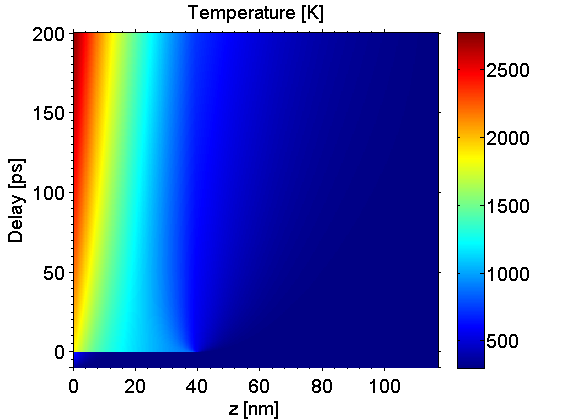

Heat Example
In this example we show how to use the heat simulations in order to calculate the excitation of a sample and its according temperature evolution.
Before we can start a heat simulation we need to build a sample structure. Be aware of that heat diffusion simulations can take a tremendous amount of time, especially for structures with a large number of unit cells.
Be sure to include all folders of the udkm1dsim toolbox to your MATLAB search path. Especially the /parameters and /helpers folders with all their subfolders.
Contents
here we clear the workspace and close all figures
clear all; close all; % these are some units and constants we can use later on u = units; const = constants;
Build a Sample Structure
% create atoms O = atomBase('O'); Ti = atomBase('Ti'); Sr = atomBase('Sr'); Ru = atomBase('Ru'); Pb = atomBase('Pb'); Zr = atomBase('Zr'); % c-axis lattice constants of the two materials cSTOsub = 3.905 *u.ang; cSRO = 3.94897 *u.ang; % sound velocities [nm/ps] of the materials svSRO = 6.312 *u.nm/u.ps; svSTO = 7.800 *u.nm/u.ps;
SrRuO3 unit cell
propSRO.aAxis = cSTOsub; % aAxis propSRO.bAxis = cSTOsub; % bAxis propSRO.debWalFac = 0; % Debye-Waller factor propSRO.soundVel = svSRO; % sound velocity propSRO.optPenDepth = 43.8*u.nm; % optical penetration depth propSRO.thermCond = 5.72*u.W/(u.m *u.K); % heat conductivity propSRO.linThermExp = 1.03e-5; % linear thermal expansion propSRO.heatCapacity = @(T)(455.2 + 0.112.*T - 2.1935e6./T.^2); % heat capacity [J/kg K] SRO = unitCell('SRO','SRO',cSRO,propSRO); SRO.addAtom(O,0); SRO.addAtom(Sr,0); SRO.addAtom(O,0.5); SRO.addAtom(O,0.5); SRO.addAtom(Ru,0.5); % SrTiO3 substrate propSTOsub.aAxis = cSTOsub; % aAxis propSTOsub.bAxis = cSTOsub; % bAxis propSTOsub.debWalFac = 0; % Debye-Waller factor propSTOsub.soundVel = svSTO; % sound velocity propSTOsub.optPenDepth = Inf; % optical penetration depth propSTOsub.thermCond = 12*u.W/(u.m *u.K); % heat conductivity propSTOsub.linThermExp = 1e-5; % linear thermal expansion propSTOsub.heatCapacity = @(T)(733.73 + 0.0248.*T - 6.531e6./T.^2); % heat capacity [J/kg K] STOsub = unitCell('STOsub', 'STOsub', cSTOsub, propSTOsub); STOsub.addAtom(O,0); STOsub.addAtom(Sr,0); STOsub.addAtom(O,0.5); STOsub.addAtom(O,0.5); STOsub.addAtom(Ti,0.5); % build the structure S = structure('Single Layer'); S.addSubStructure(SRO,100); % add 100 layers of SRO to sample S.addSubStructure(STOsub,200); % add 250 layers of STO substrate distances = S.getDistancesOfUnitCells();
Initialize Heat Simulation
Before we start the real simulation we have to initialize a heat simulation object and set some of its properties. These properties are common for all simulation objects in the package.
% Set a valid path as _cacheDir_, where data will be saved to be reused at % later times. This path must exist on your disk, e.g. 'C:\...\Cache' cacheDir = './cache'; % the current path % This boolean defines, if data is loaded from the cache or is recalculated. forceRecalc = false; % Display settings dispMessages = true; % enable any message during simulations dispCalcTime = true; % enable displaying calculation time of simulations progressBar = 'text'; % set the type of progress bars in simulations: % 'text', 'gui', 'none' % Initialize the heat simulation obeject with the sample structure and the % foreRecalc boolean H = heat(S,forceRecalc); H.setCacheDir(cacheDir); % set the cache directory % set the display parameters for this simulation object H.dispMessages = dispMessages; H.dispCalcTime = dispCalcTime; H.progressBarType = progressBar;
We can also display the settings of the properties of the simulation instance:
H.disp();
Heat simulation properties:
heat diffusion : false
interpolate at interfaces : 11
no distance mesh is set for heat diffusion calculations.
ode options :
RelTol: 1.0000e-03
left boundary type : isolator
right boundary type : isolator
This is the current structure for the simulations:
__________________________________________________
Structure properties:
Name : Single Layer
Length: 117.59 nm
----
100 times SRO: 39.49 nm
200 times STOsub: 78.10 nm
----
__________________________________________________
Display properties
force recalc : false
cache directory : ./cache
display messages : true
display calculation time : true
progress bar type : text
Simple Excitation
Now we want to calculate the temperature of the sample after an instantaneous excitation. Therefor we need to define a time vector on which we want to retrieve the results and the exciting fluenece, as well as an initial temperature for the sample structure. The initial temperature can be either a scalar which is then the constant temperature of the whole sample structure, of the initial temperature can be a vector of temperatures for each single unit cell. The result of the simulation mainly depends on the optical penetration depth, volume, and heat capacity of the involved unit cells.
time = (-10:0.1:200)*u.ps;
fluence = 20*u.mJ/u.cm^2;
initTemp = 300*u.K;
% The resulting temperature profile is calculated in one line:
tempMap = H.getTempMap(time,fluence,initTemp);
Elapsed time for _temperatureAfterDeltaExcitation_: 0.35648 seconds. Elapsed time for _tempMap_: 0.41105 seconds. _tempMap_ saved to file .\cache\tempMap_3a6e1dd66ca5f2a993b7927c81ef487a_be9129053319d07d55f0bd5422da1449.mat
plot the results:
figure(1) subplot(2,1,1) plot(distances/u.nm, tempMap(time == 0,:)); xlabel('z [nm]'); ylabel('Temperature [K]'); box on; set(gca, 'XMinorTick', 'on', 'YMinorTick', 'on', 'TickDir', 'out'); subplot(2,1,2) kk = surf(distances/u.nm,time/u.ps,tempMap); set(kk, 'LineStyle', 'none'); title('Temperature [K]'); xlabel('z [nm]'); ylabel('Delay [ps]'); axis([distances(1)/u.nm distances(end)/u.nm time(1)/u.ps time(end)/u.ps]) box; colorbar; colormap(jet(255)); set(gca, 'XMinorTick', 'on', 'YMinorTick', 'on', 'TickDir', 'out');
Excitation with Heat Diffusion
In order to include heat diffusion we have to change an internal boolean of the heat simulation instance which is default false - for no heat diffusion. This can also be done during the initialization...
H.heatDiffusion = true;
% The resulting temperature profile is calculated in one line:
tempMap = H.getTempMap(time,fluence,initTemp);
Calculating _heatDiffusion_ ... Elapsed time for _heatDiffusion_: 1.7871 seconds. Elapsed time for _temperatureAfterDeltaExcitation_: 0.23377 seconds. Calculating _heatDiffusion_ ... Elapsed time for _heatDiffusion_: 12.5081 seconds. Elapsed time for _tempMap_: 14.5447 seconds. _tempMap_ saved to file .\cache\tempMap_3a6e1dd66ca5f2a993b7927c81ef487a_721cd1b25ac95ded71971abd071a0049.mat
plot the results:
figure(2) kk = surf(distances/u.nm,time/u.ps,tempMap); set(kk, 'LineStyle', 'none'); title('Temperature [K]'); xlabel('z [nm]'); ylabel('Delay [ps]'); axis([distances(1)/u.nm distances(end)/u.nm time(1)/u.ps time(end)/u.ps]) box; colorbar; colormap(jet(255)); set(gca, 'XMinorTick', 'on', 'YMinorTick', 'on', 'TickDir', 'out');
Heat Diffusion Parameters
For heat diffusion simulations various parameters for the underlying MATLAB pdepe solver can be altered. First of all we can set all direct solver setting using the H.odeOptions struct. See the MATLAB odeset documentations for further information on this topic. Here we can increase the relative error tolerance for the simulation in order to speed things up:
H.odeOptions.RelTol = 0.1; % We can also easily alter the spacial grid for the solver by setting the % property H.distances. Less spaces in space are generally faster to solve. H.distances = linspace(0,distances(end), 100); % In case of large gradients or even steps at interface we can increase the % number of interpolations points at interfaces. The value is set to 11 by % default and should be an odd integer. Note, that the interpolation at the % interfaces is not included if you define your own spacial grid with the % H.distance property above. disp(H.intpAtInterface);
11
Finally we can also set boundary conditions for the heat diffusion. The default for the left (x = 0) and right side (x = x_end) is an isolating boundary. The two other possibilities are temperature and flux. In the latter cases you also have to provide a value for the temperature/flux:
H.setBoundaryCondition('side', 'left', 'type', 'flux', 'value', 5e11*u.W/u.m^2); H.setBoundaryCondition('side', 'right', 'type', 'temperature', 'value', 300*u.K);
H.disp();
Heat simulation properties:
heat diffusion : true
interpolate at interfaces : 11
a distance mesh is set for heat diffusion calculations.
ode options :
RelTol: 0.1000
left boundary type : flux
left boundary flux [W/m^2] : 500000000000
right boundary type : temperature
right boundary temperature [K] : 300
This is the current structure for the simulations:
__________________________________________________
Structure properties:
Name : Single Layer
Length: 117.59 nm
----
100 times SRO: 39.49 nm
200 times STOsub: 78.10 nm
----
__________________________________________________
Display properties
force recalc : false
cache directory : ./cache
display messages : true
display calculation time : true
progress bar type : text
%The resulting temperature profile is calculated in one line:
tempMap = H.getTempMap(time,fluence,initTemp);
Calculating _heatDiffusion_ ... Elapsed time for _heatDiffusion_: 0.54689 seconds. Elapsed time for _temperatureAfterDeltaExcitation_: 0.22932 seconds. Calculating _heatDiffusion_ ... Elapsed time for _heatDiffusion_: 0.89527 seconds. Elapsed time for _tempMap_: 1.6821 seconds. _tempMap_ saved to file .\cache\tempMap_3a6e1dd66ca5f2a993b7927c81ef487a_162339da7fc1bc72a62a008b28cbf2ed.mat
plot the results:
figure(3) kk = surf(distances/u.nm,time/u.ps,tempMap); set(kk, 'LineStyle', 'none'); title('Temperature [K]'); xlabel('z [nm]'); ylabel('Delay [ps]'); axis([distances(1)/u.nm distances(end)/u.nm time(1)/u.ps time(end)/u.ps]) box; colorbar; colormap(jet(255)); set(gca, 'XMinorTick', 'on', 'YMinorTick', 'on', 'TickDir', 'out');